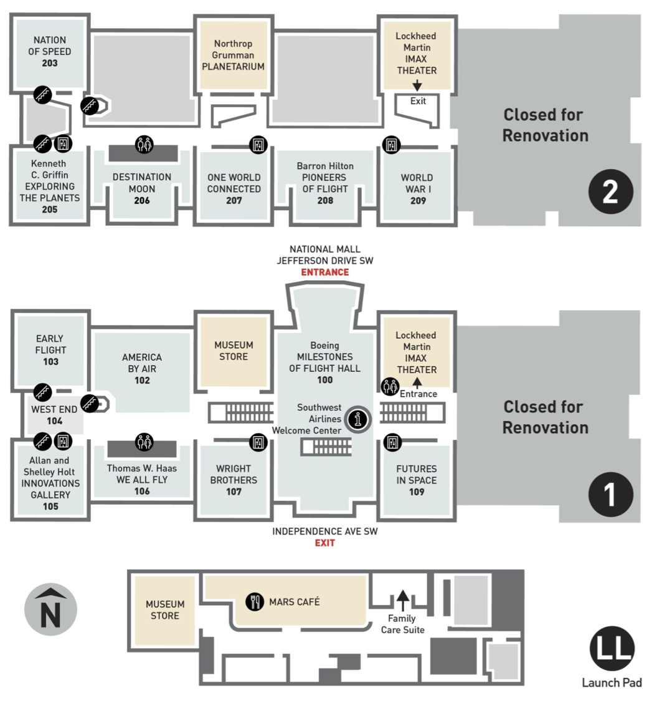

Meet at the
Ad Astra sculpture
by 9:45 AM. It's the star-topped spire on the sidewalk directly in front of the
museum's glass portico on Jefferson Drive. We'll walk over to the
entrance together to enter at 10 AM.
The 2026 Day of Action
National Air & Space Museum
A self-guided tour prepared by Ken Golkin
April 2026
This tour concentrates on five galleries in the Mall museum:
Milestones of Flight, Destination Moon,
Exploring the Planets, One World Connected, and
Futures in Space. Of these, the first three are likely to be
the favorites. The tour also notes some artifacts in the Commons (the
areas outside the galleries).
Three additional galleries particularly of interest to TPS members
will open later this year. Discovering Our Universe (the new
astronomy gallery) and Living in the Space Age (which includes
Skylab, the Hubble Space Telescope, rockets in the Missile Pit, and
more) will open on July 1, 2026;
At Home in Space (featuring the ISS) will open on
October 30, 2026.
What to Look For
Milestones of Flight
The entry hall
Touchable Moon rock from Apollo 17, the pulsar map embedded in the
floor, Mercury capsule Friendship 7, Gemini IV, and Apollo
Lunar Module LM-2 dressed as Eagle.
Destination Moon
Apollo & the Space Race
Apollo 11 Command Module Columbia, Neil Armstrong’s
moonwalk suit, a suspended F-1 engine from a Saturn V that you
walk right under, and the Lunar Roving Vehicle. JFK’s Rice
University speech plays in the first part of the gallery.
Exploring the Planets
Our gallery
Three generations of Mars rovers in one case, the Voyager Golden
Record, Stardust’s sample return capsule, the Voyager
Development Test Model overhead, and
Walking on Other Worlds — a seven-minute 360°
landing-site film in the theater-in-the-round at the center of the
gallery.
One World Connected
Second floor
How satellites reshaped everyday life on Earth. TIROS 1 (the first
weather satellite), Intelsat II, Iridium, and a mockup of the ISS
Cupola with the actual ambient sound of the station.
Futures in Space
First floor, new
The commercial spaceflight era. SpaceX Falcon 9 Merlin 1D engine
and grid fin, a Blue Origin New Shepard crew capsule mockup,
Virgin Galactic’s RocketMotorTwo, and an R2-D2 built by Adam
Savage.
Don’t miss elsewhere in the museum
The Starship Enterprise studio model from the original
Star Trek series — south end of Milestones, lights up
every hour on the hour for only five minutes.
Poe Dameron’s X-Wing from
Star Wars: The Rise of Skywalker, hanging above the west-side
escalators.
Three spacecraft suspended in the West Commons: ATS-1, Clementine,
and Mariner 5.

Museum floor plan — Mall building, levels 1 & 2.
Gallery One
Milestones of Flight
As you enter the museum through this gallery, look at the floor: it
displays the pulsar map launched on Pioneers 10 and 11 and on both
Voyager spacecraft, with the frequencies adjusted to mark Earth in July
2026, celebrating the 50th anniversary of the opening of the original
museum.
Major space artifacts on the ground (right-hand side)
Touchable Moon rock brought back by Apollo 17 —
don’t miss it. It’s in the curved silver display by the LM
leg closest to the escalator.
Viking lander: Proof test article for Viking 1 (launched
8/20/1975; landed 7/20/1976; last transmission 11/11/1982) and Viking
2 (launched 9/9/1975; landed 9/3/1976; last transmission 4/11/1980).
Viking 1, while en route to Mars, sent the radio signal that triggered
the ribbon-cutting opening the Museum on 7/1/1976.
Mercury capsule Friendship 7: John Glenn became the
first American in orbit on 2/20/1962.
Gemini IV capsule: Jim McDivitt and Ed White, 6/3–7/1965;
the first American spacewalk.
Apollo Lunar Module: LM-2, built for an Earth-orbit test flight
deemed unnecessary when the first test flown on Apollo 5 was
successful, was used instead for ground testing; restored to look
exactly like LM-5, the Eagle of Apollo 11, the day it landed on
the Moon, 7/20/1969.
Space artifacts hanging (right-hand side)
SpaceShipOne: First non-government crewed vehicle to reach
space twice within two weeks, winning the Ansari X-Prize in 2004.
Sputnik 1: Replica of the first satellite ever launched,
10/4/1957.
Explorer I: Backup for the first American satellite, launched
1/31/1958; final transmission 5/23/1958; burned up on reentry
3/31/1970. Onboard instruments from Dr. James Van Allen led to the
discovery of the Van Allen Belts, charged particles trapped by
Earth’s magnetic field.
Mariner 2: Model of the Venus probe constructed by JPL from
test components. Probe launched 8/27/1962; radioed data from Venus
12/14/1962. First to make sustained measurements of the solar wind in
interplanetary space. Contact lost 1/2/1963; still in solar orbit.
Pioneer 10: Full-scale model from spare parts. Original
launched 3/2/1972, entered the Asteroid Belt 7/15/1972, Jupiter flyby
12/3/1973, crossed Neptune’s orbit June 1983. Last telemetry
received 4/27/2002; signal dropped below threshold for detection
February 2003.
Lunar Orbiter: Engineering mock-up by Boeing. Five Lunar
Orbiters were launched to map about 99% of the Moon’s surface in
1966–1967, used to select Apollo landing sites. When all their
film was depleted, all five were deliberately crashed into the Moon.
Fans of science fiction should walk toward the Independence Avenue exit.
On the east side of the museum’s South Lobby, at the top of the
escalator/stair down to the lower level, you will find the
Starship Enterprise, the studio model used throughout the original Star Trek series
in the 1960s. The model lights up every hour on the hour, for only five
minutes — don’t miss it. The camera only ever saw the model
from one side; walk around it toward the Robert McCall mural on the
wall, and you’ll realize the far side of the model is unfinished
and has a hole in it so the wires powering the internal light bulbs
could be plugged in. (Why does NASM display a fictional starship?
Because everything begins with the imagination — and dreams
inspire careers in discovery…)
Head upstairs to the second floor using the escalator near the Lunar
Module, or the elevator in the entry to the Wright Brothers’
gallery. (That elevator’s rear wall is the view from inside the
Lunar Module.)
Above the West-side escalators is Poe Dameron’s X-Wing from
Star Wars: The Rise of Skywalker. It’s the only artifact in
the museum with two distinct signs, located on the railing between the
escalators and the walkway to the 747 nose. One is written in the real
world (“This is a movie prop”), while the other is written
inside the world of Star Wars, as if it’s all real
(“T-70 Resistance fighter! Armaments! Engines! Poe Dameron flying
it!”). (NASM curators are the most marvelous nerds on the planet,
and we love them dearly.)
Three spacecraft hanging in the West Commons (outside the galleries)
ATS-1: Launched in 1966, Applications Technology Satellite 1
was the first of six satellites built by Hughes for NASA to test new
technologies in space communications and observation from
geosynchronous orbit. Its 3-year mission lasted 19 years, until 1985.
Our ATS-1 is a prototype built by Hughes.
Clementine: Built by the Naval Research Laboratory and launched
in January 1994, it mapped the entire surface of the Moon,
transmitting 1.8 million images. Its radar data suggested the
existence of ice in a crater at the South Pole, confirmed by
NASA’s Lunar Prospector in 1998. This is an NRL engineering
model.
Mariner 5: Launched to Venus 6/14/1967 to obtain data on the
composition of its atmosphere and its radiation and magnetic field
environment. Its October 1967 flyby provided an understanding of the
extremely hot surface temperatures and unexpectedly dense atmosphere.
Its data were used in conjunction with findings from the USSR’s
Venera 4 lander. This is a full-scale model constructed by JPL from
spare parts.
If the development of human spaceflight interests you, this is your
gallery. It has two levels; do not miss the second floor, which includes
exhibits on spacesuit design and construction, the role of Mission
Control (featuring the story of Apollo 13), introduces the Ranger and
Surveyor landers that helped inform Apollo operations, and displays an
actual F-1 engine from a Saturn V. Make sure you look up while on the
first level of the gallery, because you will walk right under that
18,000-pound rocket engine. (Make certain you look up wherever you walk
in the museum; NASM’s artifacts fly, and if you’re not
looking up, you’ll miss half the museum.)
Do take time for the video displays in this gallery, which include
JFK’s Rice University speech in the first part of the gallery
(beside Alan Shepard’s spacesuit and Mercury capsule
Freedom 7), and a stunning History Channel timeline in the center
portion that puts the Space Race into the context of world events and
specifically into contemporaneous developments in American society and
culture.
Other key artifacts
Gemini VII capsule: The 14-day mission of Jim Lovell and Frank
Borman in 1965.
Neil Armstrong’s Moonwalk spacesuit: Note that the
suit’s boot does not match the famous bootprints on the Moon;
the astronauts wore insulated overshoes to protect their suit boots
from the 250°F heat of the sunlit ground, and most left them on
the Moon to save weight. Gene Cernan’s overshoes are the last
exhibit on the left as you exit the gallery.
Apollo 11 Command Module Columbia: Walk around behind
the capsule for a sobering look at the damage to its ablative heat
shield from the heat of reentry. The CM’s hatch is in a separate
case that explains changes made after the Apollo 1 fire on the pad.
Apollo 11 F-1 engine parts: The glass case west of the
suspended F-1 engine contains pieces of one of the first-stage engines
from the Saturn V that launched Apollo 11, retrieved from the bottom
of the Atlantic by a Bezos-funded expedition in 2013.
Lunar Roving Vehicle: Apollo 15, 16, and 17 included
battery-powered “Moon buggies” built by Boeing and General
Motors that allowed the astronauts to travel as far as 4.7 miles from
the LM. This one was a “qualification test unit,”
subjected to more severe conditions than expected on any actual
mission.
Lunar Reconnaissance Orbiter: Built by the Goddard Space Flight
Center and launched in 2009, the LRO entered an eccentric polar
mapping orbit (12 mi by 103 mi) on 9/15/2009 and has fuel to continue
operating until at least 2027. It has mapped over 98% of the lunar
surface at 330-ft resolution, with better than 2-ft resolution of all
Apollo landing sites. This is a full-scale model used in structural
verification tests. (Look up near the exit from the gallery.)
We are The Planetary Society — don’t miss this one.
When you enter this gallery, you’re coming into our solar system
from outside, taking a tour from the outer icy worlds to the inner rocky
ones. Be certain to look at the floor as well as up at everything
suspended from the ceiling and described on the walls; all dimensions
are fully in play. Interactive consoles let you explore worlds and
topics as you tour.
At the center of the gallery is a theater-in-the-round featuring a
7-minute silent video called Walking on Other Worlds, which uses
photographs and extrapolations from data from missions that landed on
other bodies in our solar system to convey you to those target planets,
moons, and asteroids, and then give you a 360-degree view of your
landing site. On approach to each landing, you can look at either
hemispherical screen for data on the mission; as soon as you land, be
sure to look all the way around.
Key artifacts
Voyager Record Cover (Duplicate): Ahead and to the right when
you enter, you’ll see a picture of Carl Sagan near the case
containing the Voyager Golden Record. The diagrams on the cover
include the pulsar map identifying Earth as the origin, as well as
diagrams to assist any beings who might find either of the Voyager
spacecraft to access and interpret the data on the record.
Stardust Comet Sample Return Capsule: Built by Lockheed Martin
and launched on 2/7/1999, it collected dust and ice samples from comet
Wild 2 in 2004 and parachuted to Earth on 1/15/2006. It was the first
US vehicle to return extraterrestrial material from beyond the Moon.
The collector grid is shown deployed for flight and rotated 180
degrees for display. Stardust revealed that most of a comet’s
rocky matter formed inside our solar system rather than beyond the
orbit of Neptune, as previously believed.
Voyager: Hanging high near the rear of the gallery, directly
ahead of you as you enter, is the Development Test Model of the
Voyager 1 (launched 9/5/1977) and Voyager 2 (launched 8/20/1977)
spacecraft, manufactured by JPL from facsimile and dummy parts.
Mars Rovers:
One case contains three generations of
US Mars rovers:
The Marie Curie was the flight spare for our first
rover, Sojourner, which launched 12/4/1996 and landed 7/4/1997.
It operated for 83 sols (Martian days), until communications with its
lander were lost on 9/27/1997. JPL operated Marie Curie on
Earth to test commands before sending them to Sojourner on
Mars.
The
Mars Exploration Rover Surface System Test Bed (MER SSTB)
was the Earth-based control for the two MER rovers,
Spirit (launched 6/2003; end of mission 5/2011) and
Opportunity (launched 7/2003; end of mission 2/2019). JPL used
the MER SSTB to test rover operations and troubleshoot problems.
The Mars Science Laboratory (MSL) Curiosity launched in
11/2011, landed in Gale Crater in 8/2012, and is still chugging along
long after its one-Martian-year (687 days) scheduled mission.
NASM’s craft is a medium-fidelity, full-scale model on loan from
JPL. (NASM does not have an analogue on display for the Mars 2020
Perseverance, which launched 7/30/2020 and landed on 2/18/2021.
It is similar to Curiosity but larger, and about 275 pounds
heavier. NASM does have the full-scale prototype of the
Ingenuity Mars helicopter on display at the Steven F.
Udvar-Hazy Center.)
Mariner 10: The first spacecraft to Mercury, it launched
11/3/1973, reached Venus on 2/5/1974, and became the first to use
gravity assist to change its flight path, entering a solar orbit that
brought it back to Mercury three times — on 3/29/1974,
9/21/1974, and 3/16/1975. This is the flight spare.
Spock’s Ears and a Tribble:Star Trek is
represented here by a set of Vulcan ear tips worn by Leonard Nimoy and
a Tribble.
Surveyor III Camera: In 11/1969, the crew of Apollo 12 —
Pete Conrad and Alan Bean — landed on the Moon with precision,
within walking distance of the landing site of Surveyor III, and
brought its TV camera and a few other instruments back to Earth.
This second-floor gallery focuses on how aviation and space —
especially satellites — have transformed the way we live on Earth:
how we travel, how we communicate, how we farm, how we understand
weather and climate, and how we study our world from a high vantage
point. People interested in communications technology and Earth
observation satellites may particularly enjoy visiting this gallery. The
floor is an integral part of the display, as it defines the different
orbital locations — low, medium, high — relative to the
planet. The center of the gallery is an interactive built around a large
Earth globe, where you can call up depictions of population
concentration, transportation, and wildlife tracking. There’s also
a mockup of the cupola from the International Space Station, where
you’ll hear the constant ambient noise of the station’s fans
and equipment.
The interactives in this gallery let you explore these topics and
contribute your answers to questions other visitors have also addressed.
Most of the major artifacts in this gallery are representative of key
communications and observation satellites, including Intelsat II,
Iridium, Relay 1, Sirius FM-4,
TIROS 1 (Television Infrared Observation Satellite, the first
weather satellite, 4/1/1960), and ATS 6.
This new first-floor gallery addresses current activities in space and
asks visitors to engage with questions. Why go to space? Who gets to go,
and what would they do there? How would humans live in space or on other
worlds? What roles might robots play?
Commercial space travel didn’t exist when the museum first opened.
Now, in addition to scientific exploration, there’s space tourism.
Launch has gone from being exclusively the province of governments to a
competitive commercial venture, including small-satellite
“ridesharing” that provides low-cost launch services even to
small businesses and educational institutions. Many countries are
participating in space. Private companies are building exploration and
landing vehicles not just for government contracts, but for their own
purposes. This gallery asks guests to share their ideas.
Artifacts in this gallery
Star Wars R2-D2 Model: Built by Adam Savage; part of
imagining robots.
Blue Origin New Shepard Crew Capsule Mock-Up: Standing in for
the capsule Blue Origin is currently using to launch suborbital space
tourists; when the RSS First Step is retired from launch, it
will replace the mock-up.
SpaceX Falcon 9 Merlin 1D Engine and Grid Fin: Reusable rocket
boosters have changed the launch universe. This engine was used in
three launches. The grid fin enables steering a booster back to
landing. Both were donated by SpaceX in 2022.
Rutherford Engine, Rocket Lab: New technologies in space
include rocket engines with 3-D printed parts, allowing for fast
production. The Electron rocket, which uses this engine, launches
small satellites.
Virgin Galactic RocketMotorTwo: This hybrid engine, flown on
SpaceShipTwo, launched a suborbital flight with three crew and
three paying tourists on 6/29/2023. It combines a solid propellant
with the consistency of rubber with liquid oxygen as its oxidizer,
allowing the engine to produce variable thrust and to be turned off
and restarted in flight — something that is not possible with a
solid rocket booster.